Horizontes diagnósticos superficiais e subsuperficiais
Instituto Federal do Paraná
Curso Superior em Engenharia Agronômica
11 de novembro de 2026
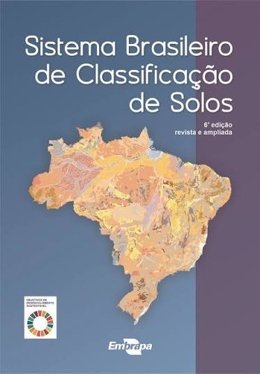
| Perfil | Hz. | Calhaus | Cascalho | Terra fina | Areia grossa | Areia fina | Silte | Argila | Argila natural | GF | Silte/Argila |
|---|---|---|---|---|---|---|---|---|---|---|---|
| g kg-1 | g kg-1 | g kg-1 | g kg-1 | g kg-1 | g kg-1 | g kg-1 | % | % | |||
| P1 | Ap | 0 | 0 | 1000 | 250 | 513 | 130 | 107 | 27 | 75 | 1,21 |
| A | 0 | 0 | 1000 | 194 | 533 | 135 | 140 | 34 | 76 | 0,96 | |
| Cr1 | 603 | 306 | 91 | 163 | 542 | 134 | 161 | 35 | 78 | 0,83 | |
| Cr2 | 930 | 60 | 10 | - | - | - | - | - | - | - | |
| RCr | 940 | 50 | 10 | - | - | - | - | - | - | - |
| Perfil | Hz. | pH H2O | pH KCl | ∆pH | Ca | Mg | Na | K | Al | H+Al | CTC | V (%) | m (%) | Corg (g kg-1) |
|---|---|---|---|---|---|---|---|---|---|---|---|---|---|---|
| P1 | Ap | 4,60 | 3,15 | -1,46 | 1,44 | 0,20 | 0,27 | 0,25 | 3,22 | 13,69 | 15,85 | 13,6 | 59,85 | 11,0 |
| A | 4,40 | 2,94 | -1,46 | 2,49 | 0,02 | 0,16 | 0,14 | 4,24 | 17,71 | 20,52 | 13,7 | 60,05 | 9,2 | |
| Cr1 | 4,35 | 2,95 | -1,40 | 4,24 | 0,14 | 0,18 | 0,15 | 6,02 | 22,62 | 27,33 | 17,2 | 56,10 | 10,6 |
Ca, Mg, Na, K, Al, H+Al e CTC em cmolc kg-1.
Horizonte pedogenético
Cada uma das seções do solo resultantes dos processos pedogenéticos e que guardam relações entre si. Estas seções (horizontes) estão separadas entre si geralmente em função de algum aspecto morfológico (cor).
Horizonte diagnóstico
Corresponde a uma seção do solo que apresenta determinados atributos para fins de classificação do solo.
Não são sinônimos dos horizontes pedogenéticos A (A1 e A2), uma vez que podem ser mais estreitos que o A1 ou incluir todo o A e parte(s) do B.
É um horizonte superficial essencialmente de constituição orgânica.
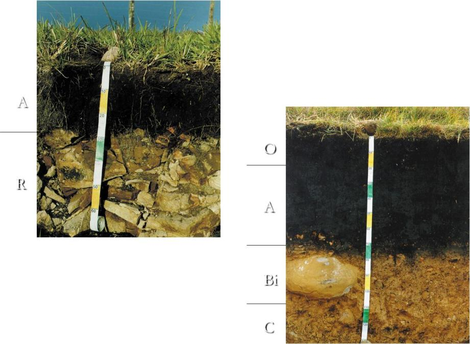
Requisitos:
Horizonte superficial de constituição orgânica, contendo pelo menos 80 g kg-1 de C-org, resultante de acumulações vegetais depositadas superficialmente.
Horizonte relativamente espesso, de cor escura, que atende:
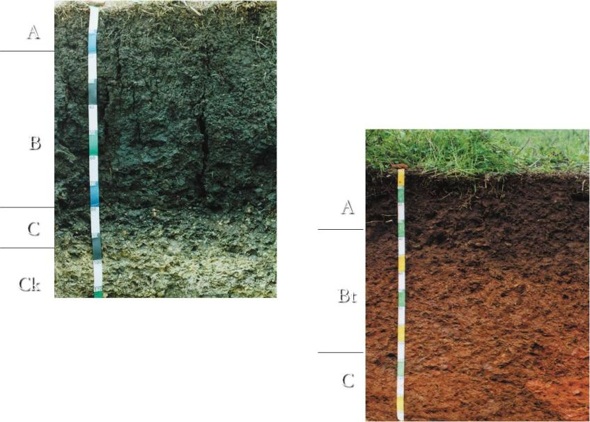
Características similares às do A chernozêmico no que se refere a cor, teor de carbono, consistência, estrutura e espessura.
Difere apenas por apresentar saturação por bases (V%) < 65%.
Horizonte de cor escura, saturação por bases inferior a 65%, apresentando espessura e teor de carbono dentro dos seguintes limites:
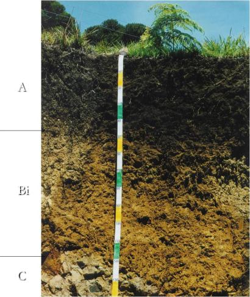
\[ \sum \left( C_{org}\ (g\ kg^{-1}) \times espessura\ (dm) \right) > 60 + \left( 0{,}1 \times \overline{argila}\ (g\ kg^{-1}) \right) \]
Em que \(\overline{argila}\) é a média ponderada do teor de argila do horizonte superficial.
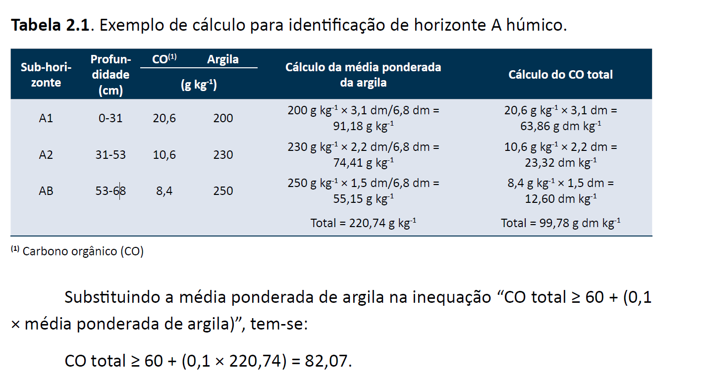
O valor de CO total no horizonte A é de 99,78, portanto, maior que 82,07. Assim, o horizonte usado como exemplo é húmico.
Fracamente desenvolvido, sendo identificado pelas seguintes características:
Horizonte formado ou modificado pelo homem pelo uso prolongado.
Não se enquadra em nenhuma das definições anteriores.
Geralmente difere do A chernozêmico, proeminente e húmico pela espessura e/ou pela cor, e do A fraco pelo teor de carbono e estrutura.
Horizonte mineral no qual houve acumulação de argila.
O conteúdo de argila no B textural é sempre maior do que no A.
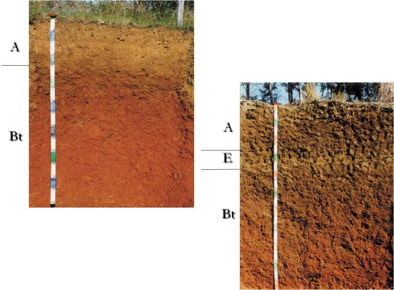
Deve satisfazer pelo menos uma das condições:
Horizonte em avançado estágio de intemperização, com praticamente ausência de minerais alteráveis, intensa dessilicificação e lixiviação de bases, com concentração residual de oxidróxidos de Fe e Al e argilominerais do tipo 1:1.
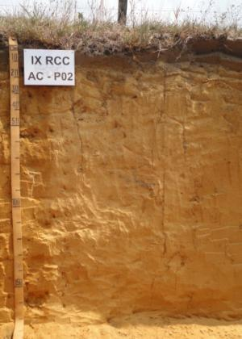
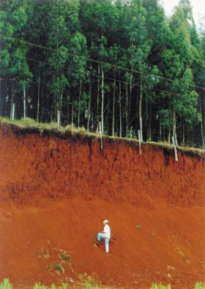
Horizonte que apresenta pouca alteração física e/ou química, porém o suficiente para desenvolvimento de um horizonte B com cor e estrutura.
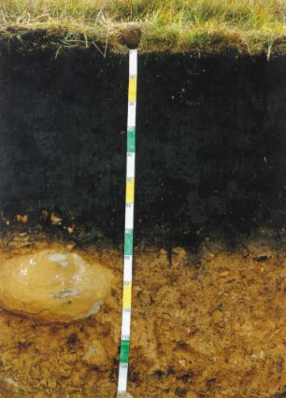
Horizonte de textura argilosa ou muito argilosa, cujo incremento no conteúdo de argila é insuficiente para caracterizar um B textural.
Apresenta cerosidade de quantidade e grau expressivos, daí a denominação nítico (= nítido, reluzente).
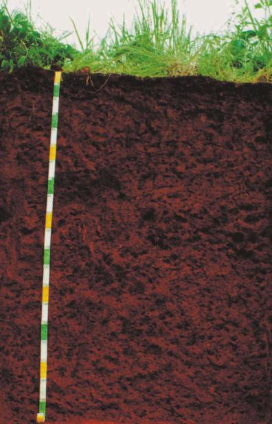
Horizonte no qual houve acumulação iluvial de matéria orgânica, associada a complexos de sílica-Al ou húmus-Al.
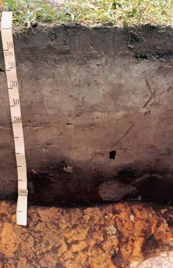
Tipo especial de horizonte B textural, precedido de mudança textural abrupta.
Cores geralmente cinzentas ou cinzento-escuras, resultantes de processos de redução.
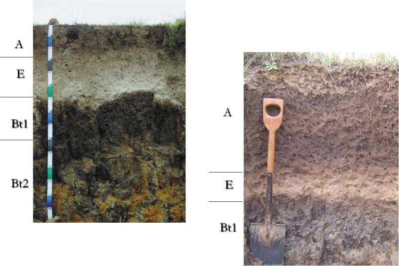
Horizonte mineral B e/ou C que apresenta um arranjamento de cores vermelhas e acinzentadas ou brancas, com ou sem cores amareladas ou brunadas, formando um padrão reticulado, poligonal ou laminar.
Caracteriza-se pela presença de plintita em quantidade igual ou superior a 15% e espessura de pelo menos 15 cm.
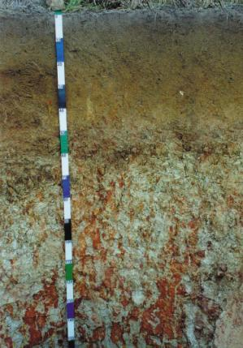
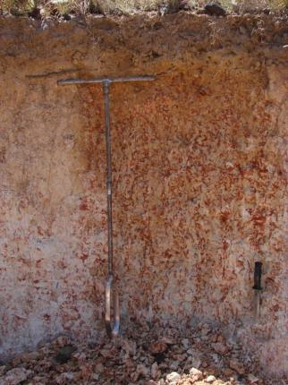
Horizonte onde predominam reações de redução, formando horizonte com predomínio de cores acinzentadas claras ou escuras, com ou sem mosqueados.
Pode ser um horizonte C, B, E ou A e deve possuir menos do que 15% de plintita.
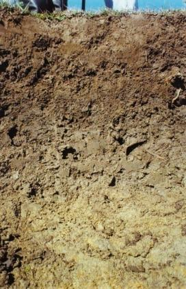
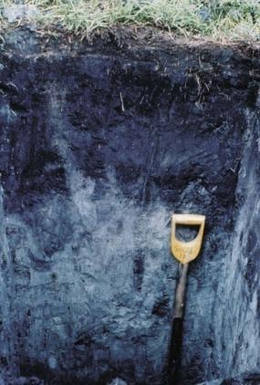
Horizonte que apresenta superfícies de fricção (slickensides) e fendas.
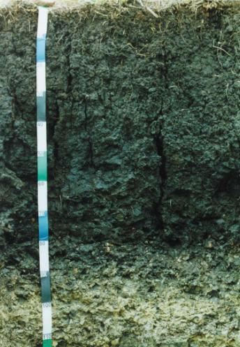
Horizonte subsuperficial no qual ocorreu perda ou segregação de material coloidal orgânico e inorgânico.
A cor do horizonte é clara, sendo determinada pela cor das partículas primárias de areia e silte.
Apresenta no mínimo 1 cm de espessura e requisitos de cores descritos no SiBCS.
Horizonte cálcico
Horizonte de acumulação de carbonato de cálcio. Geralmente a acumulação ocorre no horizonte C, mas pode ocorrer no A e no B.
Horizonte petrocálcico
Horizonte resultante da consolidação do horizonte cálcico.